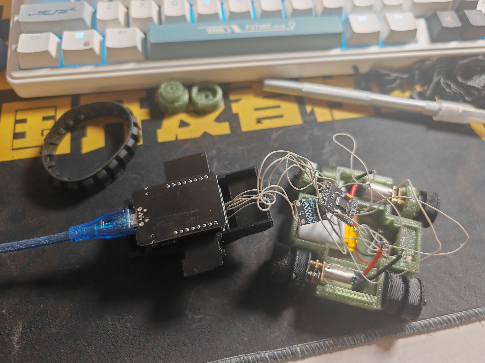
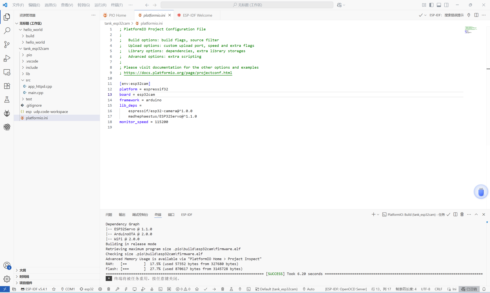
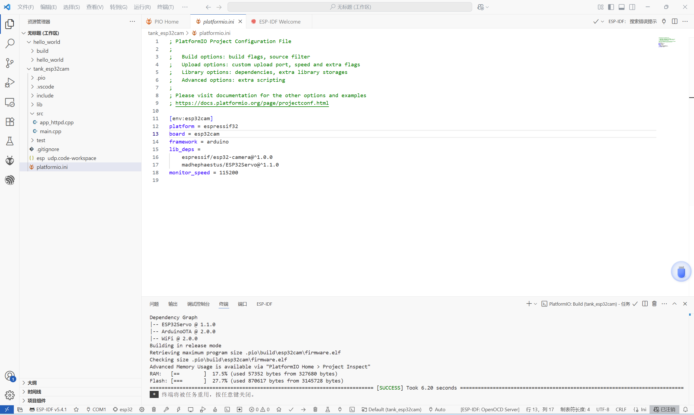

开发过程
项目整体按照课程任务分阶段推进，依次完成：
- 硬件选型与基础电路搭建（ESP32-CAM、电机驱动、舵机控制、履带组装）
- 下位机控制程序开发（Arduino平台编程、电机控制、舵机控制、LED控制）
- 摄像头模块集成、视频流数据传输测试、WiFi AP模式配置
- 上位机控制页面设计与串口调试通信
- 系统集成调试、异常情况容错、整体优化
- 系统演示录制、文档整理

 
